ラボ E6b - OAuth を使用した Entra ID 認証の追加 (手動セットアップ)
このラボでは、ID プロバイダーとして Entra ID を使用し、 OAuth 2.0 を用いて API プラグインに認証を追加します。
Microsoft 365 が AI モデルとオーケストレーションを提供する宣言型エージェントを構築したい場合は、これらのラボを実施してください。
- 🏁 はじめに
- 🔧 セットアップ
- 🧰 宣言型エージェントの基礎
- 🛠️ API をゼロから構築して統合する
- 🔐 認証
- 🔌 統合
Note
このラボでは Entra ID の詳細なセットアップ手順が多数あります。
多くの手順を自動化できる新しい Agents Toolkit が公開されていますので、近くより簡素化したバージョンのラボを提供する予定です。
このラボではプラグインと API を保護するために使用する Entra ID アプリケーションを登録します。始める前に、アプリ情報を安全な場所に保存してください。保存が必要な値は次のとおりです。
API Base URL:
API service Application (client) ID:
API service Directory (tenant) ID:
Authorization endpoint:
Token endpoint:
API service client secret:
API scope:
Plugin service application (client) ID:
Plugin service client secret:
エクササイズ 1: 永続的な開発トンネルの設定 (任意)
既定では、 Agents Toolkit はプロジェクトを起動するたびに新しい開発トンネルを作成し、ローカルで実行中の API にアクセスするための新しい URL を生成します。通常はツールキットが自動で URL を更新するため問題ありませんが、このラボは手動設定のためデバッガーを開始するたびに Entra ID と Teams Developer Portal で URL を手動更新する必要があります。そのため変更されない URL を持つ永続的な開発トンネルを設定すると便利です。
永続的トンネルを作成しない場合はこちら ▶▶▶
Agents Toolkit が作成する開発トンネルをそのまま使用しても構いません。プロジェクトを実行したら、ターミナル タブ 1️⃣ で「Start local tunnel」のターミナル 2️⃣ を選択し、 Forwarding URL 3️⃣ をコピーしてください。この URL はプロジェクトを起動するたびに変わるため、アプリ登録の reply URL (エクササイズ 2 手順 1) と Teams Developer Portal の URL (エクササイズ 5 手順 1) を都度更新する必要があります。

手順 1: Developer Tunnel CLI のインストール
以下のコマンドで Developer Tunnel をインストールします。 Developer Tunnel の完全な手順とダウンロード リンクはこちら。
| OS | コマンド |
|---|---|
| Windows | winget install Microsoft.devtunnel |
| Mac OS | brew install --cask devtunnel |
| Linux | curl -sL https://aka.ms/DevTunnelCliInstall | bash |
Tip
devtunnel コマンドが動かない場合は、パスを更新するためにコマンドラインを再起動してください。
インストールが完了したらサインインが必要です。 Microsoft 365 アカウントでサインインできます。
devtunnel user login
このラボを作業する間は devtunnel コマンドを実行したままにしておいてください。再起動が必要になったら devtunnel user login を再度実行してください。
手順 2: トンネルを作成してホストする
次に Azure Functions のローカル ポート (7071) への永続トンネルを設定します。以下のコマンドを使用し、必要に応じて "mytunnel" を別の名前に置き換えてください。
devtunnel create mytunnel -a --host-header unchanged
devtunnel port create mytunnel -p 7071
devtunnel host mytunnel
コマンド ラインに接続情報が表示されます。

「Connect via browser」 URL をコピーし、「API Base URL」として保存してください。
手順 3: プロジェクトで動的トンネルを無効化する
ローカルでプロジェクトが実行中の場合は停止します。次に .vscode\tasks.json を編集し、"Start Teams App" タスクを見つけます。"Start local tunnel" の依存関係をコメントアウトし、代わりに "Start Azurite emulator" を追加します。最終的なタスクは次のようになります。
{
"label": "Start Teams App Locally",
"dependsOn": [
"Validate prerequisites",
//"Start local tunnel",
"Start Azurite emulator",
"Create resources",
"Build project",
"Start application"
],
"dependsOrder": "sequence"
},
手順 4: サーバー URL を手動で上書きする
env/.env.local を開き、 OPENAPI_SERVER_URL の値を永続トンネルの URL に変更します。
エクササイズ 2: API 用の Entra ID アプリケーションを登録する
手順 1: Entra ID アプリ登録を追加する
Microsoft 365 Admin center 経由、または直接 https://entra.microsoft.com/ にアクセスして Entra ID 管理センターを開きます。開発用テナントでサインインしていることを確認してください。
「Identity」1️⃣、「Applications」2️⃣、「App registrations」3️⃣ を順にクリックし、「+」4️⃣ を選んで新しいアプリ登録を追加します。

アプリケーション名を "My API Service" などわかりやすい名前に設定します 1️⃣。「Supported account types」は「この組織ディレクトリ内のアカウントのみ (Microsoft のみ - シングルテナント)」を選択します 2️⃣。「Redirect URI (optional)」で「Web」を選び、開発トンネルの URL を入力します 3️⃣。
永続的トンネル URL を作成していない場合...
Agents Toolkit を起動するたびにトンネル URL が変わるため、その都度「Redirect URI」を更新する必要があります。
すべて入力したら「Register」4️⃣ をクリックします。
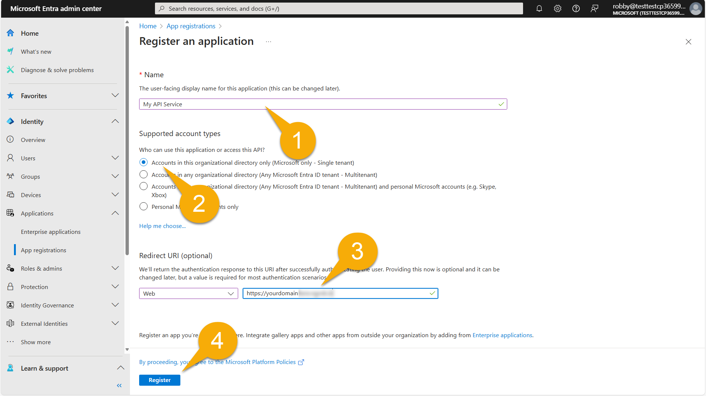
手順 2: アプリ情報をコピーして保存する
「Overview」ページで Application ID (Client ID) 1️⃣ と Directory ID (Tenant ID) 2️⃣ をコピーし、安全な場所に保存します。続いて「Endpoints」ボタン 3️⃣ をクリックします。
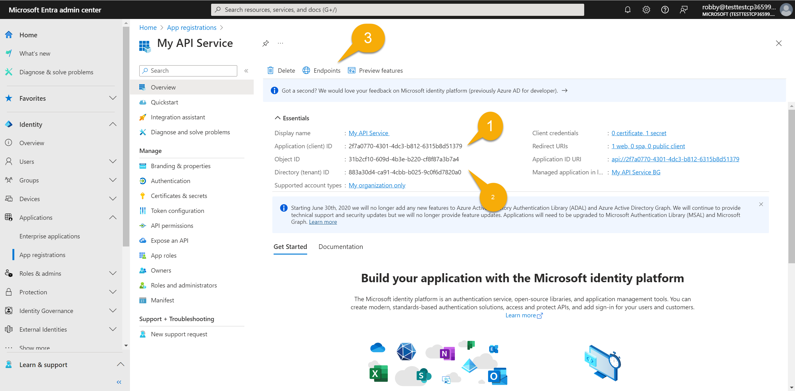
エンドポイント パネルで「OAuth 2.0 authorization endpoint (v2)」1️⃣ と「OAuth 2.0 token endpoint (v2)」2️⃣ の URL をコピーして同じ場所に保存します。
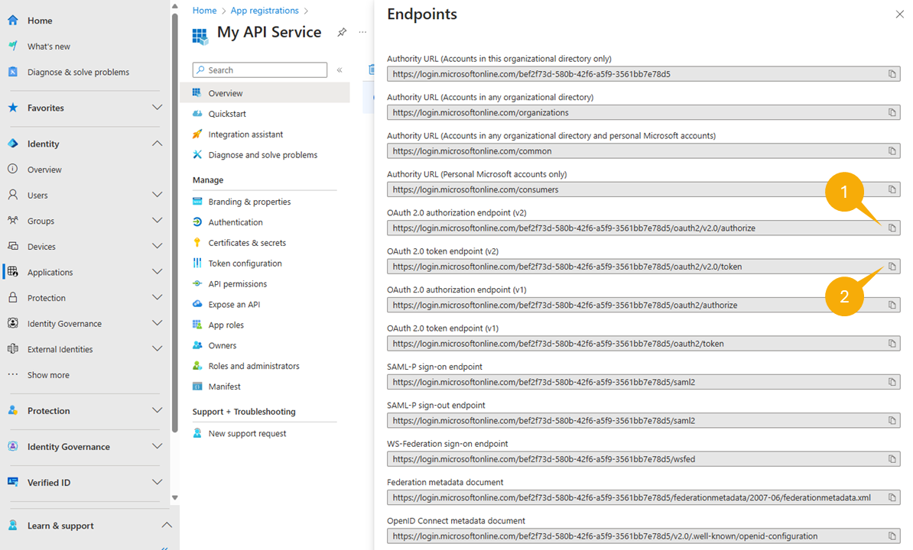
手順 3: クライアント シークレットを作成する
「Certificates & secrets」1️⃣ を開き、「+ New client secret」2️⃣ をクリックします。名前と有効期限を設定して Add を選択します。シークレットはこのときしか表示されないため 3️⃣ をコピーして安全な場所に保存してください。
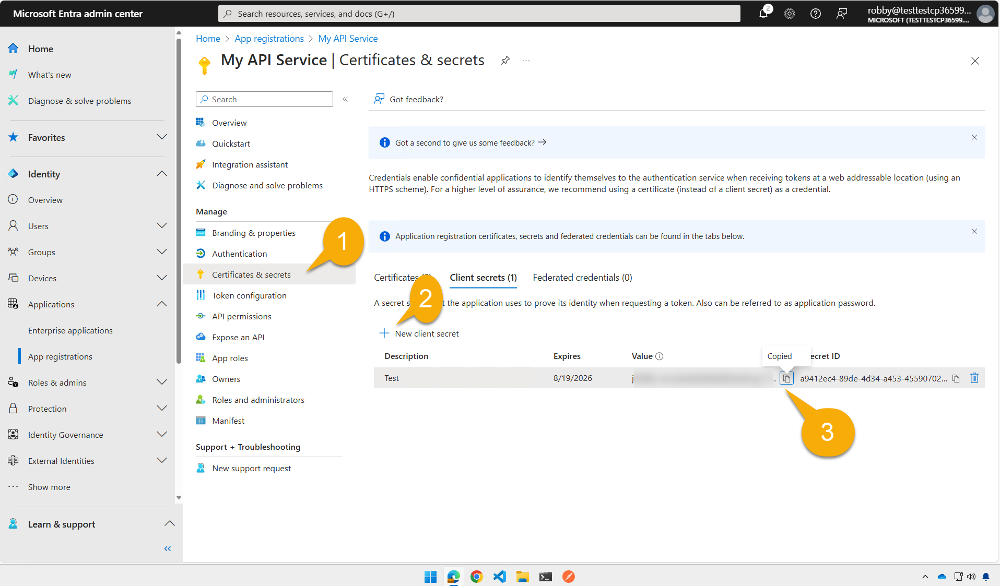
手順 4: API スコープを公開する
API への呼び出しを検証するためには、許可を表す API スコープを公開する必要があります。ここでは "access_as_user" というシンプルなスコープを設定します。
まず「Expose an API」1️⃣ に移動し、「Application ID URI」横の「Add」2️⃣ をクリックします。右側にフライアウトが開くのでデフォルトの api://<application (client) ID> のまま「Save and continue」3️⃣ をクリックします。
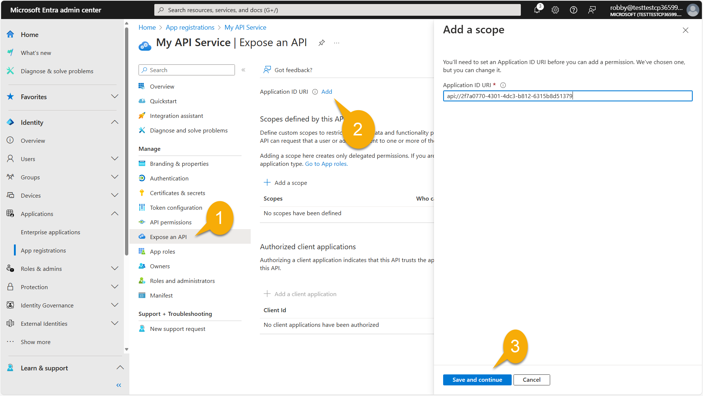
「Add a scope」で Scope name に "access_as_user" と入力します 1️⃣。その他のフィールドは以下のとおり入力します。
| フィールド | 値 |
|---|---|
| Who can consent? | Admins and users |
| Admin consent display name | Access My API as the user |
| Admin consent description | Allows an API to access My API as a user |
| User consent display name | Access My API as you |
| User consent description | Allows an app to access My API as you |
| State | Enabled |
入力後「Add Scope」2️⃣ をクリックします。
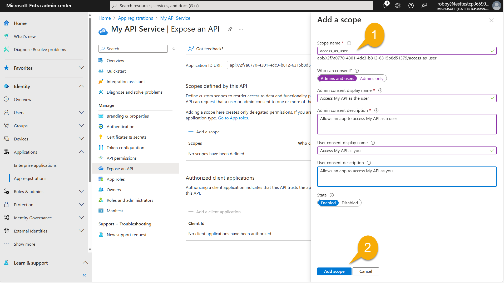
手順 5: API スコープを保存する
作成したスコープをコピーし、「API Scope」として安全な場所に保存します。
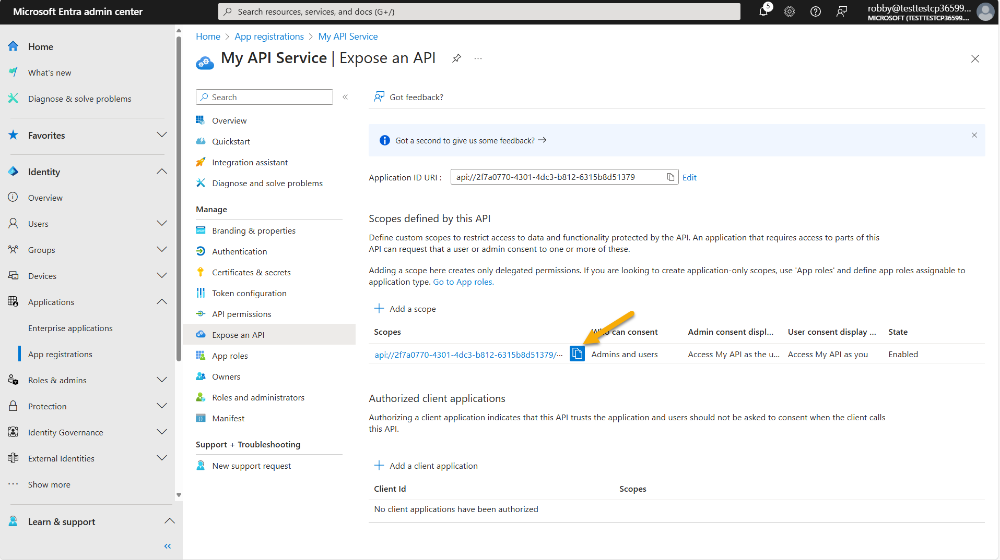
エクササイズ 3: プラグイン用の Entra ID アプリケーションを登録する
API を登録したので、次にプラグイン自体を登録します。
2 つの Entra ID アプリ登録について
本ラボは既存 API アプリ登録がある前提で、エージェントにプラグインとして統合する方法を説明しています。そのため 2 つのアプリ登録を使用します。
API をゼロから作成する場合は、常に 2 つの登録が必要とは限らず、既存のアプリ登録を流用して 1 つで実装可能です。詳しくは こちらの Learn モジュール を参照してください。
手順 1: プラグインを登録する
「App registrations」セクションに戻り、2 つ目のアプリケーションを登録します。名前は "My API Plugin" 1️⃣ とし、「Supported account types」は再度「この組織ディレクトリ内のアカウントのみ」に設定します 2️⃣。
「Redirect URL」で「Web」を選択し、 https://teams.microsoft.com/api/platform/v1.0/oAuthRedirect を入力します 3️⃣。これはログイン完了を処理する Teams の URL です。
「Register」ボタン 4️⃣ を選択して登録を完了します。
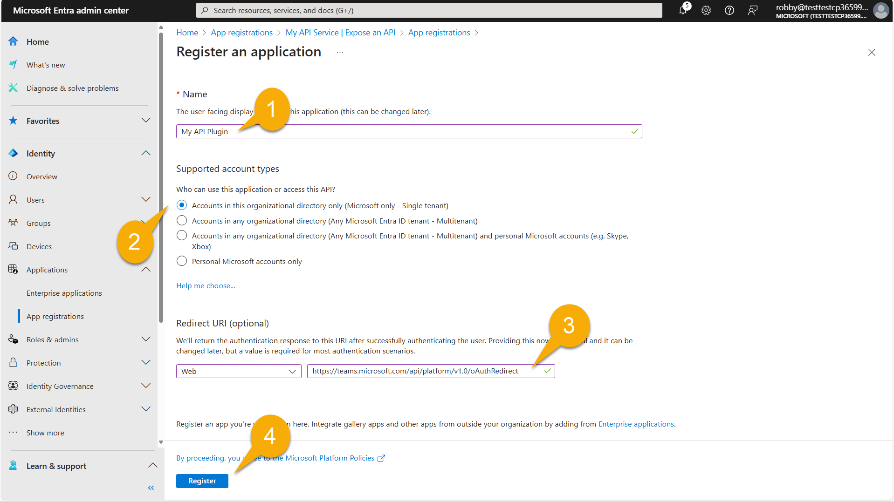
先ほどと同様に「Overview」ページでプラグイン アプリの Application (client) ID を保存してください。
手順 2: クライアント シークレットを作成する
同様の手順でクライアント シークレットを作成し、「Plugin service client secret」として保存します。
手順 3: 権限を付与する
プラグインは API サービスを呼び出す必要があるため、権限付与が必要です。「API permissions」に移動し、「APIs my organization uses」タブ 1️⃣ を選択、API サービスを検索 2️⃣ して結果から選択します 3️⃣。
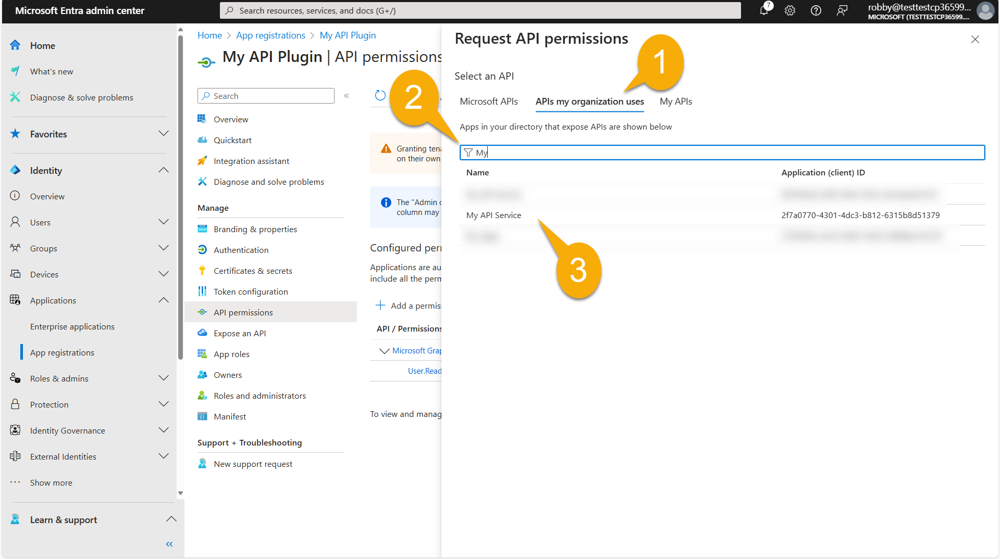
API サービス アプリが表示されたら "access_as_user" 権限を選び、「Add permission」をクリックします。
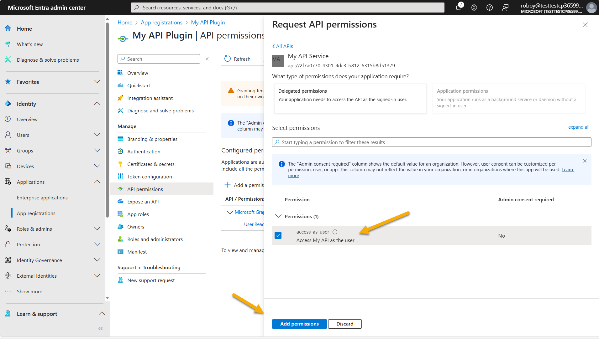
エクササイズ 4: API アプリ登録にプラグイン アプリ ID を追加する
手順 1: Plugin アプリの ID を API サービス アプリに追加する
API サービス アプリケーションが API プラグイン アプリからトークンを受け取れるようにする必要があります。API サービス アプリの App Registration に戻り、「Manifest」を開いて knownClientApplications 1️⃣ を探します。以下のようにプラグイン アプリのクライアント ID を追加します。
"knownClientApplications": [
"<your-plugin-client-id>"
]
完了したら「Save」2️⃣ をクリックします。
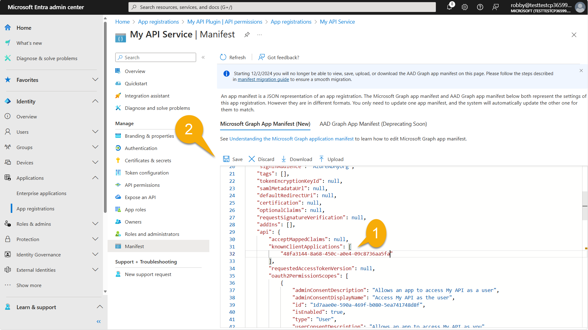
エクササイズ 5: Teams Developer Portal で OAuth 情報を登録する
アプリは設定済みですが、 Microsoft 365 はまだ認識していません。シークレットをアプリ マニフェストに保存するのは安全でないため、 Teams Developer Portal に安全に保存するための場所が用意されています。このエクササイズでは OAuth クライアント アプリを Teams Developer Portal に登録し、 Copilot がユーザーを認証できるようにします。
手順 1: 新しい OAuth クライアント登録を作成する
Teams Developer Portal にアクセスし、「Tools」1️⃣、「OAuth client registration」2️⃣ を選択します。
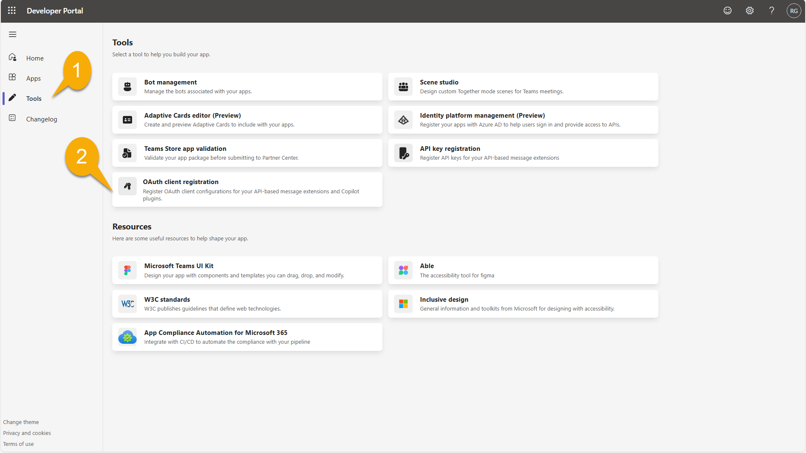
まだ登録済みクライアントがない場合は「Register client」を、ある場合は「+ New OAuth client registration」をクリックし、フォームを入力します。ここまでに保存した情報を使用します。
| フィールド | 値 |
|---|---|
| Name | 覚えやすい名前 |
| Base URL | API service の Base URL |
| Restrict usage by org | 「My organization only」を選択 |
| Restrict usage by app | 「Any Teams app」を選択 |
| Client ID | Plugin Application の Client ID |
| Client secret | Plugin Application の client secret |
| Authorization endpoint | Authorization endpoint |
| Token endpoint | Token endpoint |
| Refresh endpoint | Token endpoint と同じ |
| API scope | API Service アプリケーションのスコープ |
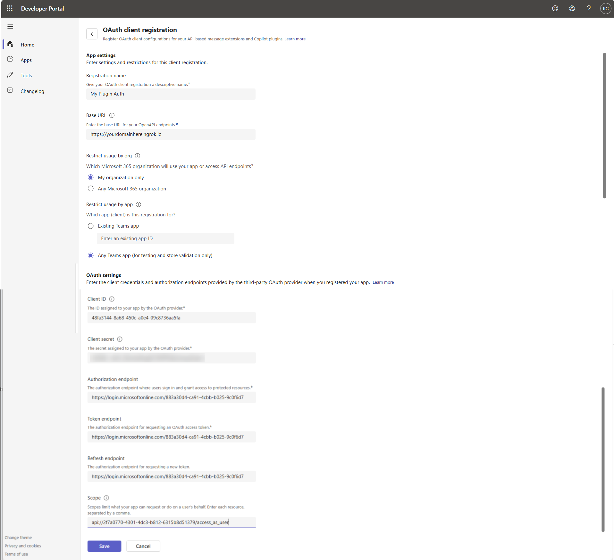
永続的トンネル URL を作成していない場合...
Agents Toolkit を起動するたびに「Base URL」を新しいトンネル URL へ更新する必要があります。
手順 2: OAuth 登録 ID を保存する
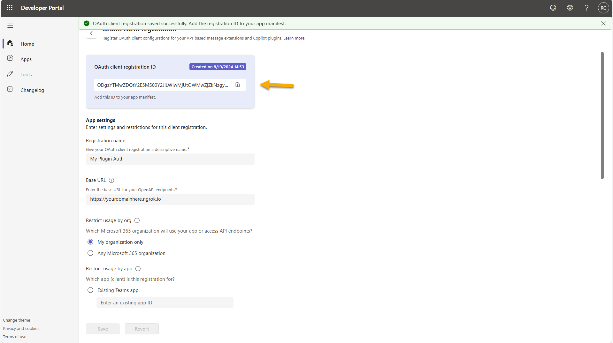
ポータルに OAuth クライアントの Registration ID が表示されます。次の手順で使用するため保存してください。
エクササイズ 6: アプリケーション パッケージを更新する
手順 1: プラグイン ファイルを更新する
Visual Studio Code で作業フォルダーを開き、 appPackage フォルダー内の trey-plugin.json を開きます。ここには Open API Specification (OAS) ファイルに含まれない Copilot 用情報が格納されています。
Runtimes の下に auth プロパティがあり、 type が "None" になっています。以下のように変更して Copilot に Vault の OAuth 設定を使って認証するよう指示します。
"auth": {
"type": "OAuthPluginVault",
"reference_id": "${{OAUTH_CLIENT_REGISTRATION_ID}}"
},
続いて env/.env.local に次の行を追加します。
OAUTH_CLIENT_REGISTRATION_ID=<registration id you saved in the previous exercise>
次回 API プラグインを起動してプロンプトを送ると、サインインを促されるはずです。ただしアプリ自体はまだ保護されていないため、誰でもアクセスできます。次のステップでコードを更新し、有効なログインを確認して Microsoft 365 ユーザーとして API にアクセスするようにします (架空の "Avery Howard" ではありません)。
エクササイズ 7: アプリケーション コードを更新する
手順 1: JWT 検証ライブラリをインストールする
作業ディレクトリで次のコマンドを実行します。
npm i jwt-validate
これで Entra ID の認可トークンを検証するライブラリがインストールされます。
Warning
Microsoft は NodeJS 向けの Entra ID トークン検証ライブラリを公式には提供していません。代わりに 詳細なドキュメント を参照して独自実装することを推奨しています。
Microsoft MVP の Andrew Connell 氏による記事 も参考になります。
このラボでは、 Waldek Mastykarz 氏 が提供する コミュニティ ライブラリ を使用します。 MIT ライセンスで Microsoft のサポート対象外ですので自己責任でご利用ください。
サポート対象ライブラリの進捗を追跡したい場合は この GitHub Issue を参照してください。
手順 2: API 用の環境変数を追加する
作業フォルダーの env フォルダーにある env.local を開き、 API Service アプリの Client ID と Tenant ID を追加します。
API_APPLICATION_ID=<your-api-service-client-id>
API_TENANT_ID=<your-tenant-id>
これらの値を Agents Toolkit 内で使用できるように、作業フォルダーのルートにある teamsapp.local.yml を更新します。コメント "Generate runtime environment variables" を探し、 STORAGE_ACCOUNT_CONNECTION_STRING の下に次を追加します。
- uses: file/createOrUpdateEnvironmentFile
with:
target: ./.localConfigs
envs:
STORAGE_ACCOUNT_CONNECTION_STRING: ${{SECRET_STORAGE_ACCOUNT_CONNECTION_STRING}},
API_APPLICATION_ID: ${{API_APPLICATION_ID}}
API_TENANT_ID: ${{API_TENANT_ID}}
手順 3: Identity Service を更新する
OAuth ログインは機能していますが、トークンが有効かをコードで確認しなければ安全ではありません。この手順ではトークンを検証し、ユーザーの名前や ID などの情報を抽出するコードを追加します。
src/services フォルダーの IdentityService.ts を開きます。
ファイル冒頭の import 群に次を追加します。
import { TokenValidator, ValidateTokenOptions, getEntraJwksUri } from 'jwt-validate';
続いて class Identity の下に次の行を追加します。
private validator: TokenValidator;
次に以下のコメントを探します。
// ** INSERT REQUEST VALIDATION HERE (see Lab E6) **
コメントを次のコードで置き換えます。
// Try to validate the token and get user's basic information
try {
const { API_APPLICATION_ID, API_TENANT_ID } = process.env;
const token = req.headers.get("Authorization")?.split(" ")[1];
if (!token) {
throw new HttpError(401, "Authorization token not found");
}
// create a new token validator for the Microsoft Entra common tenant
if (!this.validator) {
// We need a new validator object which we will continue to use on subsequent
// requests so it can cache the Entra ID signing keys
// For multitenant, use:
// const entraJwksUri = await getEntraJwksUri();
const entraJwksUri = await getEntraJwksUri(API_TENANT_ID);
this.validator = new TokenValidator({
jwksUri: entraJwksUri
});
console.log ("Token validator created");
}
// Use these options for single-tenant applications
const options: ValidateTokenOptions = {
audience: `api://${API_APPLICATION_ID}`,
issuer: `https://sts.windows.net/${API_TENANT_ID}/`,
// NOTE: If this is a multi-tenant app, look for
// issuer: "https://sts.windows.net/common/",
// Also you may wish to manage a list of allowed tenants
// and test them as well
// allowedTenants: [process.env["AAD_APP_TENANT_ID"]],
scp: ["access_as_user"]
};
// validate the token
const validToken = await this.validator.validateToken(token, options);
userId = validToken.oid;
userName = validToken.name;
userEmail = validToken.upn;
console.log(`Request ${this.requestNumber++}: Token is valid for user ${userName} (${userId})`);
}
catch (ex) {
// Token is missing or invalid - return a 401 error
console.error(ex);
throw new HttpError(401, "Unauthorized");
}
コードを読み解く
まず Authorization ヘッダーからトークンを取得します。このヘッダーは "Bearer <トークン>" 形式なので split(" ") でトークン部分だけを取り出しています。
認証に失敗した場合は例外を投げ、 Azure Functions が 401 エラーを返します。
次に jwt-validate ライブラリを使うための validator を作成します。この呼び出しは Entra ID から署名キーを取得するので非同期です。
ValidateTokenOptions には次を設定します。
audience が API サービス アプリ URI と一致
issuer がテナントのセキュリティ トークン サービスであること
* scope が "access_as_user" と一致
トークンが有効なら、ユーザーの ID、名前、メールなどのクレームが取得できます。
マルチテナント アプリの場合
マルチテナント アプリの場合の検証方法について、コード中のコメントを参照してください。
userId を取得すると、コードは Consultant レコードを検索します。元のコードでは Avery Howard の ID をハード コードしていましたが、これ以降はログイン ユーザーの ID を使用し、見つからなければ新しい Consultant レコードを作成します。
初回実行時にはログイン ユーザー用の Consultant がデフォルト スキルで作成されます。独自デモ用に変更したい場合は Azure Storage Explorer を使用して編集できます。

プロジェクト割り当ては Assignment テーブルに格納され、 Project ID と Consultant ID を参照します。
エクササイズ 8: アプリケーションをテストする
アプリ パッケージの manifest バージョンを更新してからテストします。 appPackage\manifest.json で以下を実施してください。
appPackageフォルダーのmanifest.jsonを開きます。versionフィールドを探します。例:
json "version": "1.0.0"- バージョン番号をわずかに増やします。例:
json "version": "1.0.1" - 保存します。
手順 1: アプリケーションを (再) 起動する
以前のラボからアプリがまだ実行中の場合は停止し、アプリ パッケージを再生成させます。
F5 キーでアプリを実行し、前と同様にインストールします。
プラグインに「私が担当している Trey プロジェクトは？」と尋ねます。 API 呼び出し確認カードが表示される場合があります。「Allow Once」をクリックしてください (まだ認証ではありません)。
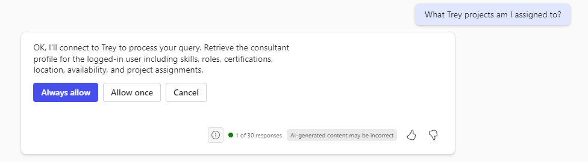
確認カードの後にログイン カードが表示されます。「Sign in to Trey」をクリックしてサインインします。最初はポップアップ ウィンドウでログインと同意が求められます。次回以降はブラウザーに資格情報がキャッシュされているため表示されない場合があります。
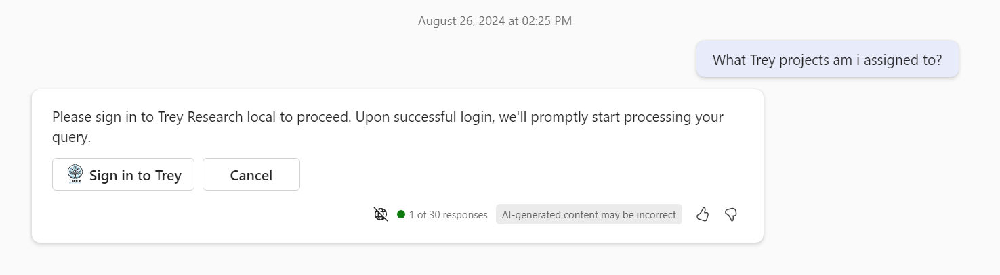
管理者がユーザーによる同意を許可していない場合は、以下のような画面が表示されることがあります。
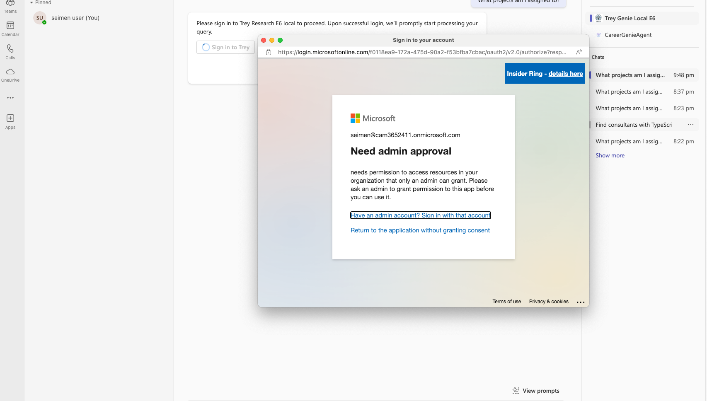
この場合、管理者に API プラグイン アプリ登録へグローバル同意を手動で付与してもらう必要があります。
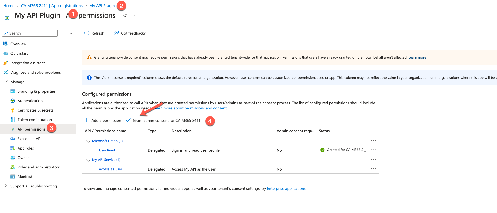
ログイン カードが消え、 Copilot からの応答が表示されます。データベースに今追加されたばかりなので、まだプロジェクトは割り当てられていません。
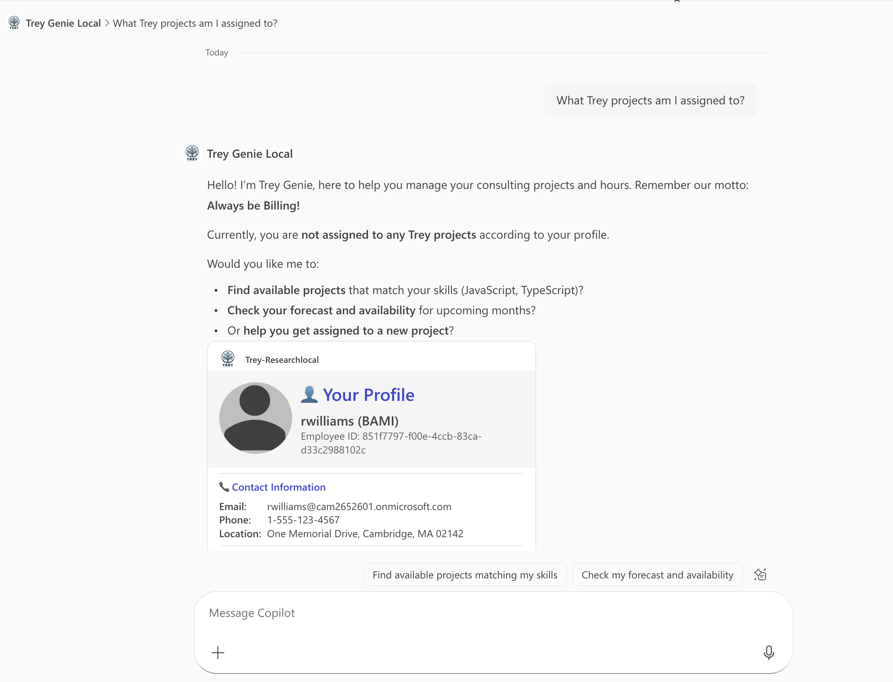
Copilot に Woodgrove プロジェクトへの追加を依頼してください。必須情報を省いた場合、 Copilot が尋ねてきます。
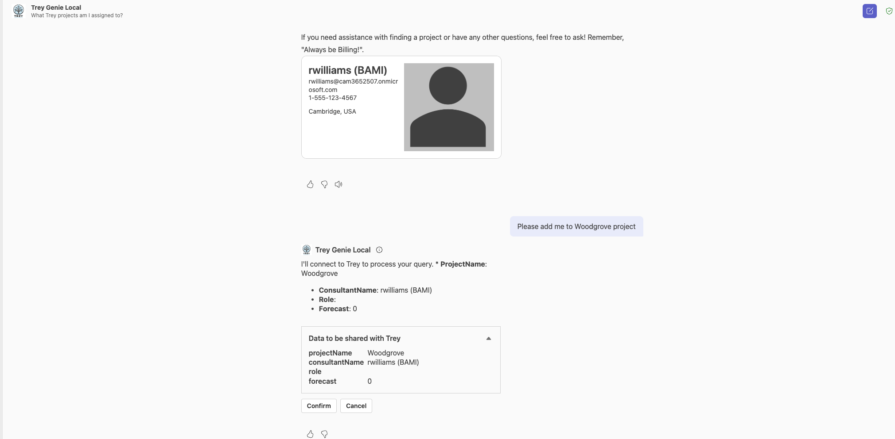
次に「私のスキルと担当プロジェクトを教えて」と聞いて確認します。
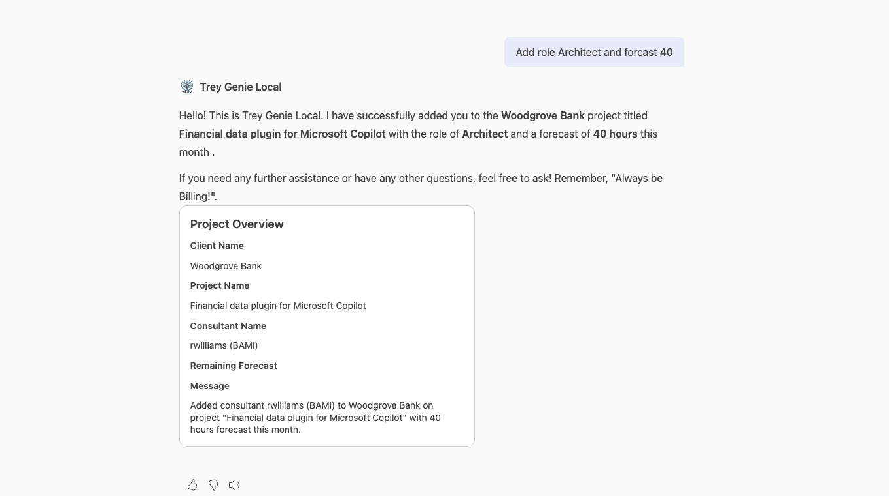
おめでとうございます！
ラボ E6b「Entra ID 認証の追加 (手動セットアップ)」が完了しました！
何か面白いことを試してみませんか？ソリューションに Copilot Connector を追加してみましょう。